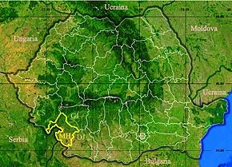
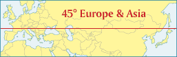
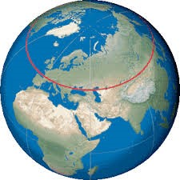

Magazin:
Un concept unic de magazin deschis recent intr-o cladire de birouri reprezentativa in care combinam intr-un mod elegant pasiunea pentru vin, arta si muzica buna.
Va oferim o selectie speciala de vinuri, pictura, sculptura, fotografie, grafica, sticlarie, toate produse unicat realizate de artisti recunoscuti din Romania, albume de arta si arhitectura precum si muzica buna.
Am pus laolalta pasiunile noastre pentru frumos, suntem onorati sa avem in familie mai multi artisti plastici, pictori, sculptori, arhitecti, am incercat sa cream un concept unic prin care sa oferim produse deosebite intr-un magazin de cadouri.
Am reusit sa alaturam arta vinului bun si muzicii bune, albumelor de arta si produselor de sticlarie lucrate manual, toate incantandu-ne simturile si relaxandu-ne. Impreuna cu arhitectul nostru am creat o mica galerie de arta iar prin modul in care am imbinat produsele am reusit sa obtinem atmosfera relaxanta pe care clientii nostri o apreciaza in orice moment al zilei.
Consideram ca armonia e esentiala in vietile noastre, prin conceptul propus incercam sa oferim echilibrul intre valorile simple si dorintele celor care ne viziteaza.
Poveste vin:
Vinul nostru este produs intr-o mica podgorie situata in sud-vestul Romaniei, in conditii exceptionale de sol si clima, specifice judetului Mehedinti.
Viticultura a existat în această zonă inca din timpul dacilor, fiind o zonă locuită și nu foarte îndepărtată de capitala Daciei romane, Ulpia Traiana Sarmizegetusa.
Documentar, zona viticola Corcova este recunoscută din secolul al XV-lea. Într-un hrisov datat din 29 iunie 1497, Radu cel Mare face danie Mânăstirii Tismana 300 vedre de vin provenit de la Jidoștița.
Clima zonei este temperat - continentală, în care se simt influențe mediteraneene; iarna, în special, au loc invazii de mase de aer umed și cald de origine mediteraneană și oceanică, ceea ce face ca acest anotimp al anului să fie mai blând, iar verile sunt în general călduroase dar cu nopți răcoroase datorate proximității pădurilor și munților. Temperatura medie anuală a aerului este de 11,5°C, media anuală a precipitațiilor este de cca 600 mm, avand cele mai bune conditii pentru obtinerea strugurilor de calitate superioara. Plantarea viței de vie este executata de la nord la sud pentru a obține o expunere cât mai lungă la lumina și căldura soarelui.
Profitand de exceptionala pozitionare de-a lungul paralelei 45, podgoria noastra beneficiaza de conditii de expunere solara identice cu cele mai renumite reginui viticole din lume: Nordul Italiei si sudul Frantei, rezultand vinuri de calitate si complexitate asemanatoare, strugurii ajungand la maturitate in cel mai echilibrat ecosistem din Europa.
Aflandu-se la jumatatea distantei intre Ecuator si Polul Nord, podgoria noastra situata de-a lungul Paralelei 45 este insorita mai mult de 15 ore/zi vara si aproape 9 ore/zi in timpul iernii.
Expunerea solara speciala a domeniului, conditiile mineralogice deosebite specifice Podisului Getic si experienta viticultorilor nostri conduc catre vinuri biodinamice de cea mai inalta calitate.
Citate:
"Vinul e toiagul batranetilor si nebunia tineretilor"
ANTON PANN
"E vinul de-azi mai rau ca cel de ieri, amicii mei? Mai bun ca orice vin baut e cel pe care-l bei!"
MIHAI EMINESCU
"Beau pentru ca am ocazia, dar uneori beau pentru ca nu am nici o ocazie"
MIGUEL DE CERVANTES
"Este bine sa ne amintim ca exista cinci motive pentru a bea: venirea unui prieten, setea cuiva, frica de sete pe viitor, gustul excelent al vinului, sau oricare alt motiv."
MIGUEL DE CERVANTES
"Tu, cel ce iubesti vinul, nu lasa niciodata via sa sufere."
VALERIU BUTULESCU
"O sticla de vin contine mai multa filozofie in ea decat orice alta carte din lume"
LOUIS PASTEUR
"Oamenii sunt ca vinul: timpul ii acreste pe cei rai, dar sporeste calitatea celor buni."
CICERO
"Intelepciunea nu apare automat cu varsta. Nimic nu apare. E adevarat ca unele vinuri se innobileaza cu varsta. Dar doar daca strugurii au fost de calitate."
ABIGAIL VAN BAUREN
"Imi place vinul rosu pentru ca este mai sofisticat, mai complex si mai matur. Seamana un pic cu mine, nu mai e tanar dar nici batran inca."
MICK HUCKNALL
"Acolo unde nu exista vin, nu exista dragoste."
EURIPIDE
"Vinul este o poezie imbuteliata."
ROBERT STEVENSON
"Sa fie dragostea noastra ca un vin bun, sa creasca mai puternic odata cu varsta."
VECHI TOAST ENGLEZ
"Un butoi de vin poate face mai multe miracole decat o biserica plina de sfinti."
PROVERB ITALIAN
"Apa pentru piele, vinul pentru vitalitate."
PROVERB ITALIAN
"Daca lipseste vinul, lipseste tot."
PROVERB LATIN
"Masa fara vin este o zi fara soare."
LOUIS PASTEUR
"Cine nu iubeste deloc vinul, femeile, cantecul, va ramane prost toata viata."
MARTIN LUTHER
"Bucataria buna si vinul bun este paradisul pe pamant."
HENRIC IV
"A sti sa bei vin este o adevarata stiinta."
VOLTAIRE
"Binecuvantata fie vita de vie si femeia, singurele daruri ale naturii care produc bucurie deopotriva si saracului si bogatului."
MARIA TEREZA
"Cand sorbiti vinul din cupe amintiti-va ca beti din sangele vitei de vie, puterea pamantului si eternitatea soarelui."
ALEXANDRU CEL MARE